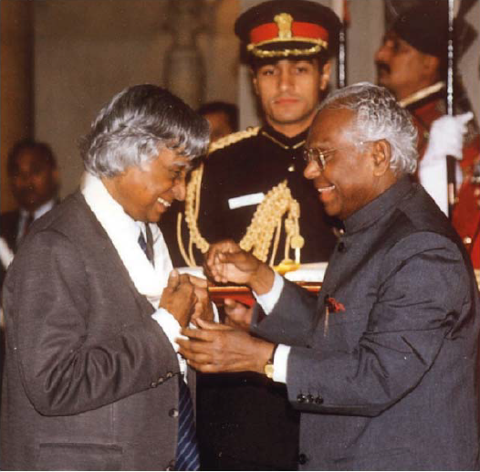

Awards & Recognitions
Dr. Kalam's outstanding contributions earned him several prestigious awards, including:
Bharat Ratna (1997): India's highest civilian award for his achievements in science and public service.
Padma Vibhushan (1990): For his exceptional contribution to science and engineering.
Padma Bhushan (1981): For his work in aerospace engineering and defense research.
Indira Gandhi Award for National Integration (1997): For promoting unity and harmony.
Honored by over 40 universities and institutions with honorary doctorates from around the world.
Known globally as a role model, Dr. Kalam inspired countless youth to pursue science, education, and service to the nation.
